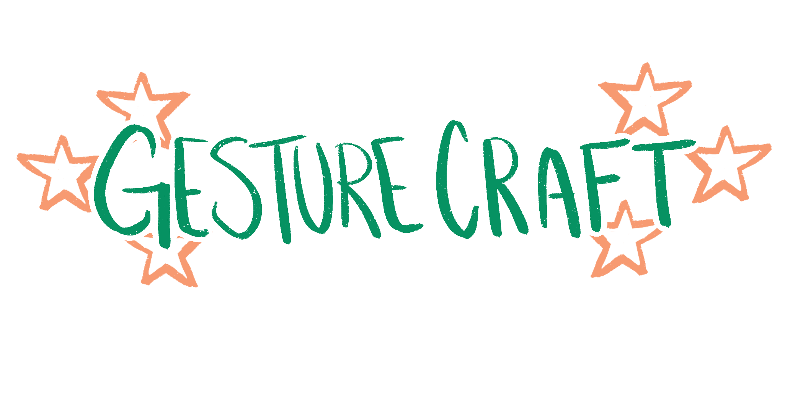
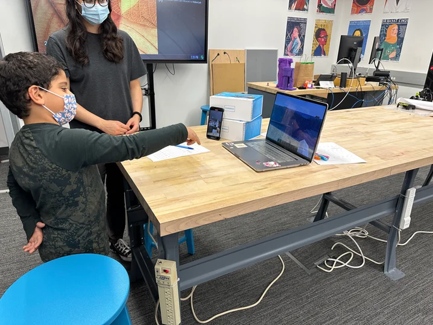
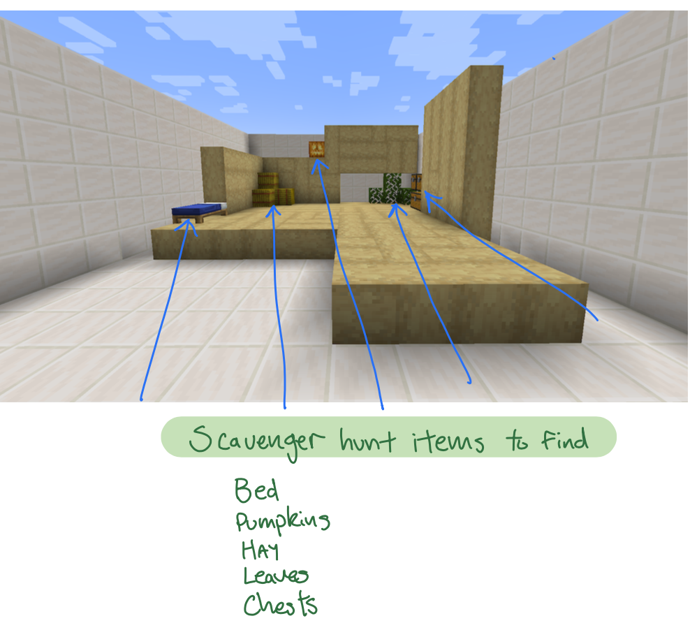
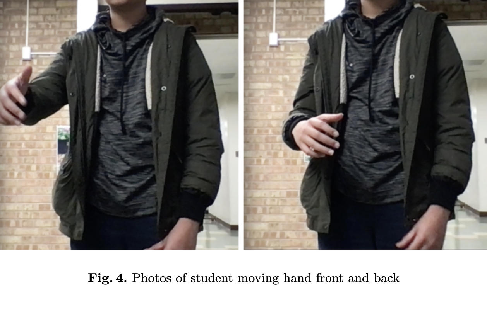

Transforming Education through Gestural Interactions in Minecraft
Bridging Play and Learning
I have immersed myself in creating a groundbreaking world of education by taking the beloved Minecraft and infusing it with the magic of gestures. I offer children an unparalleled hands-on experience, empowering them to navigate and build within the virtual realm using their own hands.

Objective
My project aims to investigate how interactive gestures and control gestures impact children's cognitive processes and learning outcomes in educational settings. I strive to create an inclusive learning environment, especially beneficial for children with disabilities, by combining accessible design with embodied cognition to promote novel forms of engagement and spatial reasoning.
Methods
In the first user study, I surveyed 15 participants aged 6-17 from a STEAM summer camp for gaming gesture preferences. I introduced seven participants to a gesture-based gameplay system without specific gesture details, while eight were given all details. I used post-play surveys to gather feedback, influencing adjustments to the gesture recognition program. A second round with ten 9-12 year olds involved Minecraft-related spatial reasoning tasks, with data collected on gestures and participant experiences for further refinement. I integrated OpenCV, MediaPipe, and Minecraft libraries for real-time gesture recognition.
Findings
While hand poses may lead to fatigue during movement and navigation tasks, users reported easier viewfinder and object manipulation. Increased usage of embodied gestures in spatial cognition tasks was noted among players who extensively utilized the gestural interface. Youth suggestions for complex in-game tasks expanded the design space for embodied interactions. I aim to develop and assess mechanistic embodiments, such as loops and modularization, for their potential roles in spatial reasoning and computing education. I highlight connections between gesture use patterns and competencies in spatial reasoning through gesture data analysis.
Participants demonstrated proficient spatial description through gestures, aiding memory recall and visualization. Gestures facilitated dynamic interactions with virtual space, fostering spatial understanding and depth perception. I seamlessly integrated the system with the Minecraft API, enhancing the gameplay experience through gestural controls.
Demo Video
Check out this short demo video showcasing GestureCraft in action!
Transforming Education through Gestural Interactions in Minecraft
Skills: User Research, Interaction Design, Gesture Recognition, Python, OpenCV, MediaPipe, Minecraft API Integration
-
hi

hi

hi
